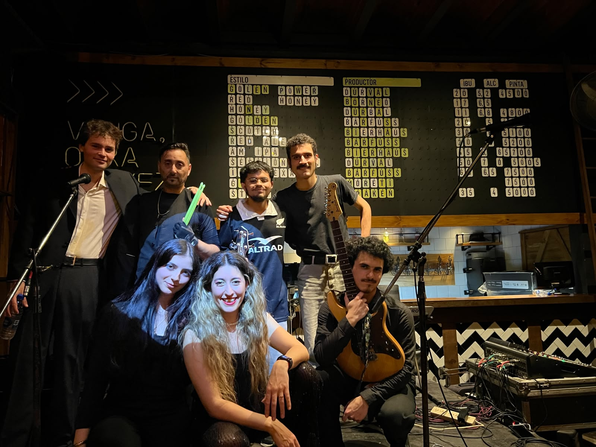

Banda en vivo de La Plata. De los ’70 a hoy, música nacional e internacional, adaptada a cada evento.

Somos músicos que van de un género a otro sin perder la energía. Elegimos los clásicos que todos cantan y los tocamos para que sigan vivos.
Crecer como profesionales en el ámbito musical.
Conectar con el público presente, adaptándonos a cada evento.
Que la música siga propagándose: mantener viva la cultura musical en las viejas y nuevas generaciones.
Una muestra de lo que suena: clásicos de los ’70 a hoy, internacionales y nacionales. El setlist final se arma según tu evento.
Armamos la formación según el evento, social o empresarial. Cuando el repertorio lo pide, sumamos músicos sesionistas, por ejemplo vientos.
PARA ORGANIZADORES
| CANAL | INTEGRANTE | INSTRUMENTO | TIPO |
|---|---|---|---|
| 01 | Martina Ferreyra | Voz | Beta 58 · pie jirafa alto |
| 02 | Eliana Sortino | Voz | Beta 58 · pie jirafa alto |
| 03 | Mariano Artola | Coros | SM58 · pie jirafa alto |
| 04 | Mariano Artola | Guitarra eléctrica | DI · entrada XLR |
| 05 | Bautista Pourtalé | Guitarra eléctrica | SM57 |
| 06 | Rodrigo Suárez | Bajo eléctrico | DI (plug ¼" del músico) |
| 07 | Diego Sánchez | Batería electrónica L | DI · 220 V |
| 08 | Diego Sánchez | Batería electrónica R | DI · 220 V |